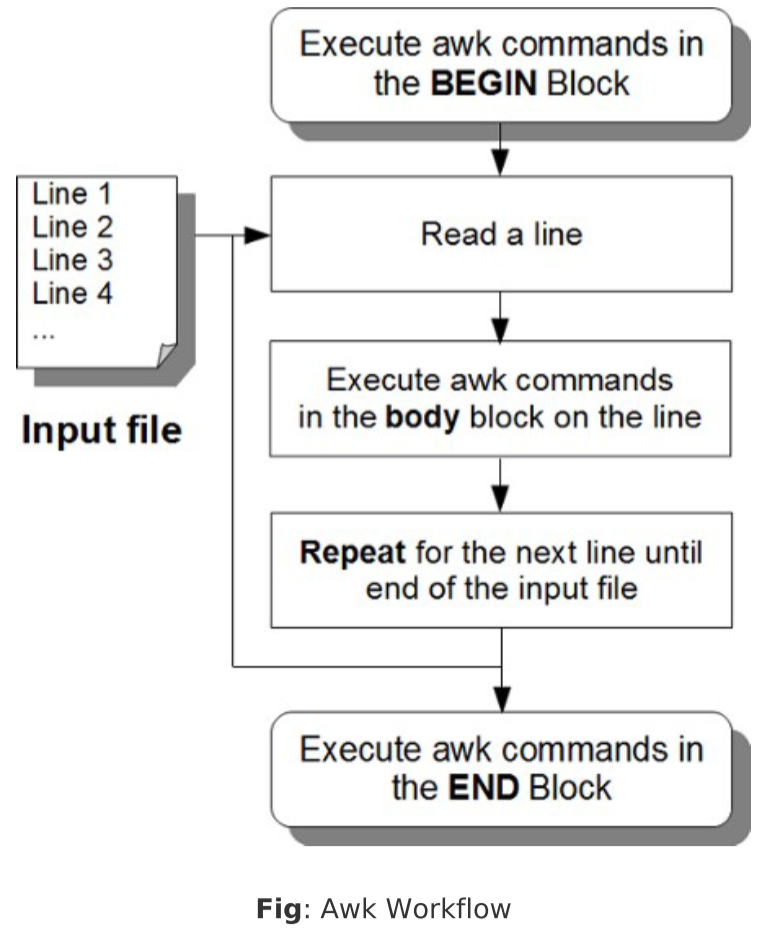

Chapter 8. Awk Syntax and Basic Commands
Awk是一个强大的处理文本的语言
- AWK is original AWK.
- NAWK is new AWK.
- GAWK is GNU AWK.所有的Linux发行版本都自带GAWK
在linux系统中，你可以看到/bin/awk是一个软链接，链接到/bin/gawk 创建简单的实验文件
employee.txt
employee-number,employee-name,employee-title
- $ vi employee.txt
- 101,John Doe,CEO
- 102,Jason Smith,IT Manager
- 103,Raj Reddy,Sysadmin
- 104,Anand Ram,Developer
- 105,Jane Miller,Sales Manager
items.txt
item-number,item-description,item-category,cost,quantityavailable
- $ vi items.txt
- 101,HD Camcorder,Video,210,10
- 102,Refrigerator,Appliance,850,2
- 103,MP3 Player,Audio,270,15
- 104,Tennis Racket,Sports,190,20
- 105,Laser Printer,Office,475,5
items-sold.txt
item-number qty-sold-month1 qty-sold-month2 qty-sold-month3 qty-sold-month4 qty-sold-month5 qty-sold-month6
- $ vi items-sold.txt
- 101 2 10 5 8 10 12
- 102 0 1 4 3 0 2
- 103 10 6 11 20 5 13
- 104 2 3 4 0 6 5
- 105 10 2 5 7 12 6
Awk Command Syntax
基本语法
awk -Fs ‘/pattern/ {action}’ input-file
(or)
awk -Fs ‘{action}’ intput-file
/pattern/ {action}：表示当匹配到了/pattern/则执行{action}
Awk Program Structure (BEGIN, body, END block)
Awk程序结构。一个典型的Awk命令有三个结构
BEGIN block
开始快语法:
BEGIN块只在程序运行之初执行一次，在输入文件所有行之前
- BEGIN块是打印的报告头和初始化变量的好地方。
- 您可以在开始块有一个或一个以上的awk命令。
- 关键字BEGIN应该大写字母指定。
- 开始块是可选的。
body block
基本语法：
END Block
基本语法：
和BEGIN块一样，只在结尾执行一次
- END块是打印报表页脚和做任何清理活动的好地方。
- 您可以在END块的一个或多个AWK命令。
- 关键字应该以大写字母指定。
- END块是可选的。
AWK处理流程图

一个简单的AWK例子
- $ awk 'BEGIN { FS=":";print "---header---" } \
- /mail/ {print $1} \
- END { print "---footer---"}' /etc/passwd
- ---header--
- mail
- mailnull
- ---footer---
创建AWK脚本执行
- $ vi myscript.awk
- BEGIN {
- FS=":"
- print "---header---"
- }
- /mail/ {
- print $1
- }
- END {
- print "---footer---"
- }
然后执行命令
- $ awk -f myscript.awk /etc/passwd
- ---header--
- mail
- mailnull
- ---footer---
三个模块是都是可选的
一般来说，BEGIN和END模块都是可选的，主要用body块
但是，也有只用BEGIN块的
- $ awk 'BEGIN { print "Hello World!" }'
- Hello World!
Multiple Input Files
多个输入文件直接在后面添加参数文件就行。
BEGIN块和END块都是只执行一次的，不管有多少个输入文件
Print Command（打印命令）
默认情况，print命令将输出所有行，就和cat命令一样
awk '{print}' employee.txt
你也可以输出特定字段，默认分隔符为空格-F ' '
下列命令是等价的
- awk -F ',' '{print $2}' employee.txt
- awk -F "," '{print $2}' employee.txt
- awk -F, '{print $2}' employee.txt
而$0等价与全部
- awk '{print}' employee.txt
- awk '{print $0}' employee.txt
Pattern Matching（模式匹配）
和sed命令差不多，匹配到相应行才执行后续命令
- awk -F, '{print $3,":is:",$2}' employee.txt
-
- CEO :is: John Doe
- IT Manager :is: Jason Smith
- Sysadmin :is: Raj Reddy
- Developer :is: anand Ram
- Sales Manager :is: Jane Miller
可以看出print还能在中间拼接文字，只有匹配到的行输出了
- awk -F, '/^102/ {print $3,":is:",$2}' employee.txt
- IT Manager :is: Jason Smith